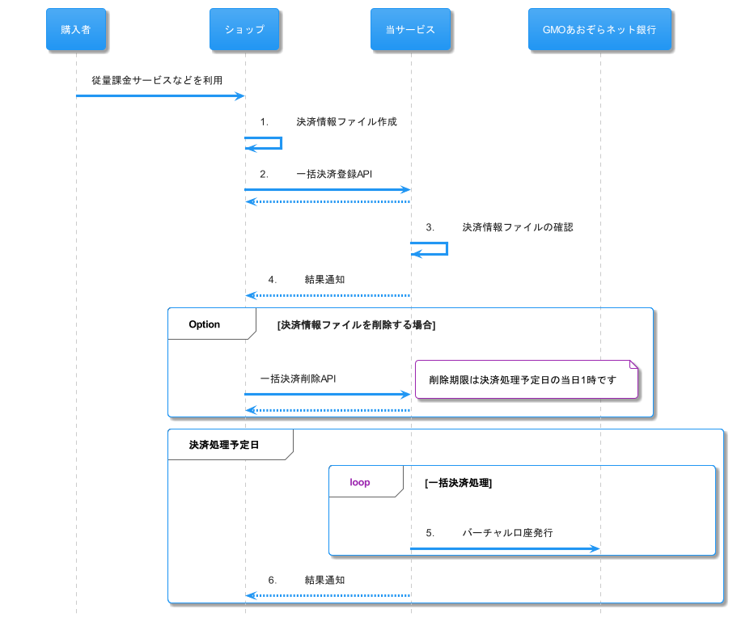

批量支付（银行转账（虚拟账户））
批量支付（银行转账（虚拟账户））可以一次签发数千至数万个虚拟账户。
普通虚拟账户支付需要对每笔支付调用 API 签发虚拟账户。使用此功能，只需上传 JSON 文件即可批量签发虚拟账户，减少 API 调用次数并提高处理效率。
使用此功能前，须分别申请开通 fincode 虚拟账户支付与批量支付（银行转账（虚拟账户）），并通过审核。
批量支付流程

- 将需要批量签发账户的虚拟账户支付信息汇总为 JSON 文件。
- 调用登记批量支付接口，上传 JSON 文件。
process_plan_date（计划处理日期）可以用来预约签发。不指定时会立即处理。 - fincode 检查上传数据的格式。检查完成后，批量支付状态变为
確認済み（CHECKED）。 process_plan_date到达指定时间后，系统开始为每笔支付签发并分配虚拟账户。- 全部处理完成后，批量支付状态变为
完了（COMPLETED）。各笔支付信息变为支払い待ち（AWAITING_CUSTOMER_PAYMENT）状态，分别等待向各自的虚拟账户转账。 - 买家向虚拟账户转账后，会像普通虚拟账户支付一样发送 Webhook 事件通知。
JSON 文件格式
上传的 JSON 文件以 multipart/form-data 格式发送，将支付信息列表放入data 字段。
| 字段名称 | 类型 | 是否必填 | 说明 |
|---|---|---|---|
id | String | 订单 ID | |
billing_amount | String | ○ | 应收金额 |
billing_tax | String | 应收税费和运费 | |
customer_id | String | 客户 ID | |
payment_method_id | String | 支付方式 ID | |
payment_term_day | Integer | 付款有效天数。省略时为 90 天。 | |
reference_order_id | String | 用于复用虚拟账户的订单 ID。指定时，复用该订单原先分配的虚拟账户。复用条件与普通虚拟账户支付相同。 | |
use_exact_deposit_amount | Boolean | 可入账金额设置的启用状态。true时启用。 | |
client_field_1 | String | 商户自定义字段 1 | |
client_field_2 | String | 商户自定义字段 2 | |
client_field_3 | String | 商户自定义字段 3 |
API 参数详情请参阅API 参考（登记批量支付）。
批量支付的状态
批量支付状态列表
批量支付整体可处于以下状态。
| 状态名称 | 状态 | 说明 |
|---|---|---|
| 检查中 | CHECKING | 正在检查上传数据的格式。 |
| 已检查 | CHECKED | 数据检查已完成，正在等待计划处理日期。只有此状态可以删除。 |
| 处理中 | RUNNING | 正在签发和分配虚拟账户。 |
| 已完成 | COMPLETED | 全部处理完成。 |
| 错误 | ERROR | 检查数据时发生错误。 |
※如果上传的 JSON 文件含有无效数据等，哪怕只有一笔出错，整个批量支付也会变为エラー（ERROR）状态。
批量支付状态转换
下表列出各操作后的状态。“－”表示没有对应的结果或操作。
| 操作 | 操作结果 | 操作前状态 | 操作后状态 |
|---|---|---|---|
| 登记批量支付 | 成功 | － | 检查中 |
| 检查完成 | 成功 | 检查中 | 已检查 |
| 错误 | 检查中 | 错误 | |
| 到达计划处理日期 | － | 已检查 | 处理中 |
| 全部处理完成 | － | 处理中 | 已完成 |
| 删除批量支付 | 成功 | 已检查 | （已删除） |
批量支付明细状态列表
批量支付内的各笔支付信息（批量支付明细）可处于以下状态。
| 状态名称 | 状态 | 说明 |
|---|---|---|
| 等待处理 | CHECKED | 等待分配虚拟账户。 |
| 成功 | SUCCEEDED | 虚拟账户签发并分配完毕。 |
| 失败 | FAILED | 虚拟账户签发或分配失败。 |
SUCCEEDED的各笔支付信息会变为支払い待ち（AWAITING_CUSTOMER_PAYMENT）状态，之后按普通虚拟账户支付的规格处理。
查看处理结果
获取批量支付列表接口可查询已登记的批量支付。获取批量支付明细列表接口可查看指定批量支付内各笔支付的处理结果。
如果检查数据时发生错误，可通过获取批量支付明细列表响应中的 error_detail 字段查看错误详情。
API 详情请参阅API 参考（批量支付）。
收费
批量支付（银行转账（虚拟账户））会对批量签发的账户中实际未用于付款的账户收费。
收费对象
批量签发所登记的支付信息进入以下任一状态时，将按笔收费。
| 状态名称 | 状态 | 说明 |
|---|---|---|
| 付款已过期 | EXPIRED | 付款期限内未收到款项，因而过期。 |
| 已取消 | CANCELED | 支付已取消。 |
转账已完成的支付（CAPTURED 状态）不收费。
费用统计与结算
费用按照单笔价格 × 应收费的笔数计算。
统计和结算周期与支付处理手续费相同，从当期销售额中抵扣。如果费用超过销售额，则另行收费。
注意事项
| 限制项目 | 说明 |
|---|---|
| 批量支付后的单笔支付操作 | 批量签发后，取消虚拟账户支付等操作使用与普通虚拟账户支付相同的 API。 |
| 标识生成来源 | 通过批量支付签发的各笔支付信息，均记录了生成该笔支付的批量支付 ID（bulk_payment_id）。 |
| 可以删除的状态 | 確認済み（CHECKED）状态的批量支付可以删除。 |